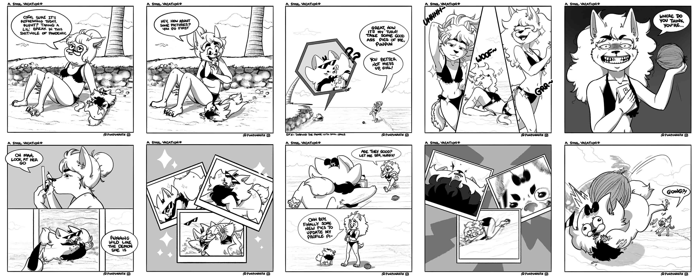

PunPun Short Comics
I am currently illustrating small short comics for social media. They involve my two characters PunPun and Niko, telling funny stories through their interaction and any life experience they have. People find them amusing and sometimes relatable which motivates me to keep doing what I love.
PunPun and Friends

My illustrative work is followed by my two main characters, PunPun and Niko, and their friends. These two are like Tom and Jerry, treating each other like siblings with stomps and glares. But in the end, they love each other.
PunPunimations

PunPunimations is the official name for my animation studio, a studio where all of my animated projects will be published, including the adventures of PunPun and her owner Niko as they film themselves talking about any topic. It has its own YouTube channel following the same name given. It's already in motion, so you'll be able to watch the first video.